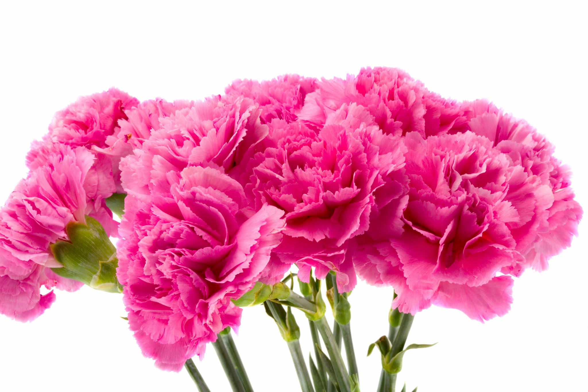
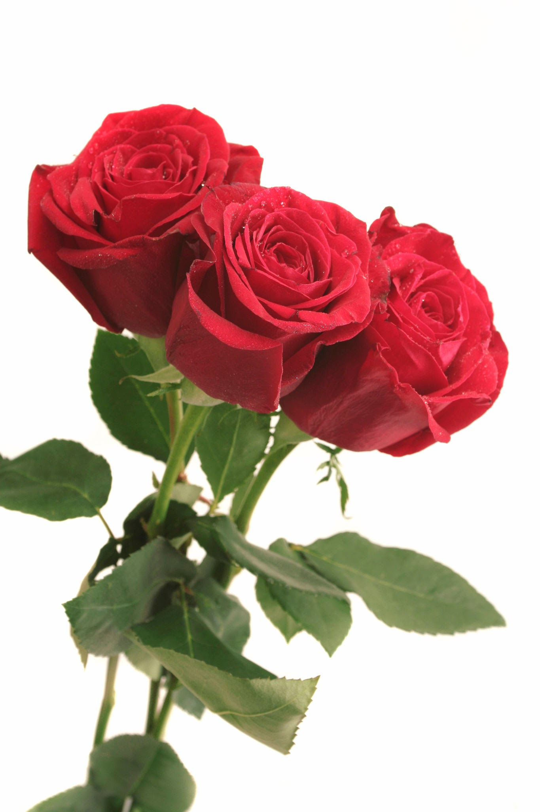
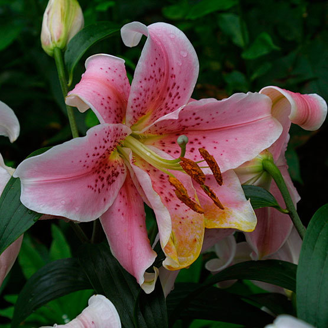

<!DOCTYPE html>
<html>
    
    <head>
        <link href="https://cdn.jsdelivr.net/npm/bootstrap@5.3.2/dist/css/bootstrap.min.css" rel="stylesheet" integrity="sha384-T3c6CoIi6uLrA9TneNEoa7RxnatzjcDSCmG1MXxSR1GAsXEV/Dwwykc2MPK8M2HN" crossorigin="anonymous">
        <script src="https://cdn.jsdelivr.net/npm/bootstrap@5.3.2/dist/js/bootstrap.bundle.min.js" integrity="sha384-C6RzsynM9kWDrMNeT87bh95OGNyZPhcTNXj1NW7RuBCsyN/o0jlpcV8Qyq46cDfL" crossorigin="anonymous"></script>
        <link rel="stylesheet" href="external.css">

        <style>
            .container {
                background-image: url(bg1.jpg);
                padding: 100px;
                text-align: center;
                }
    
            img{
                width: 50%;
                height: 50%;
            }

            .bottonstyle { 
                width: 150px;
                border-radius: 20px;
                border: none;
                background: pink;
                color: white;
                font-weight: bold;
                margin-bottom: 20px;
                text-align: center;
                }
        </style>

    </head>
    </html>

    <body style="margin: 5%;">
        <div class="container">
            <div class="centered">
                <h1 class="headings">Azalea</h1>
                <p style="text-align: center;">Chocolate&Gifts</p>
            </div>
        </div>
        <hr>
           <br/>

           <div class="card">
                <div class="card-body">
                    <div class="row">
                        <div class="col-md-4">
                            
                        </div>
                        <div class="col-md-8">
                            <h1>Carnation</h1>
                            <p>
                                Dianthus caryophyllus, commonly known as carnation or clove pink, is a species of Dianthus native to the Mediterranean region. Its exact natural range is uncertain due to extensive cultivation over the last 2,000 years. Carnations are prized for their vibrant colors, delicate fringed petals, and enchanting fragrance
                            </p>
                        </div>
                </div>

                <div class="card-body">
                    <div class="row">
                        <div class="col-md-4">
                            
                        </div>
                        <div class="col-md-8">
                            <h1>Rose</h1>
                            <p>
                                A rose is either a woody perennial flowering plant of the genus Rosa, in the family Rosaceae, or the flower it bears. There are over three hundred species and tens of thousands of cultivars.
                            </p>
                        </div>
                </div>

                <div class="card-body">
                    <div class="row">
                        <div class="col-md-4">
                            
                        </div>
                        <div class="col-md-8">
                            <h1>Lily</h1>
                            <p>
                                Lilium is a genus of herbaceous flowering plants growing from bulbs, all with large prominent flowers. They are the true lilies. Lilies are a group of flowering plants which are important in culture and literature in much of the world.
                            </p>
                        </div>
                </div>

                <div class="card-body">
                    <div class="row">
                        <div class="col-md-4">
                            
                        </div>
                        <div class="col-md-8">
                            <h1>Chrysanthemum</h1>
                            <p>Chrysanthemums, sometimes called mums or chrysanths, are flowering plants of the genus Chrysanthemum in the family Asteraceae. They are native to East Asia and northeastern Europe. Most species originate from East Asia and the center of diversity is in China. Countless horticultural varieties and cultivars exist.</p>
                        </div>
                </div>
            </div>

            <form action="index.html">
                <input class="bottonstyle" type="submit" value="Shop Now!"/>
            </form>

            <hr/>
        

        <footer>
            <p>@ flowers Oman- Flowers and gifts muscat</p>
        </footer>

    </body>

